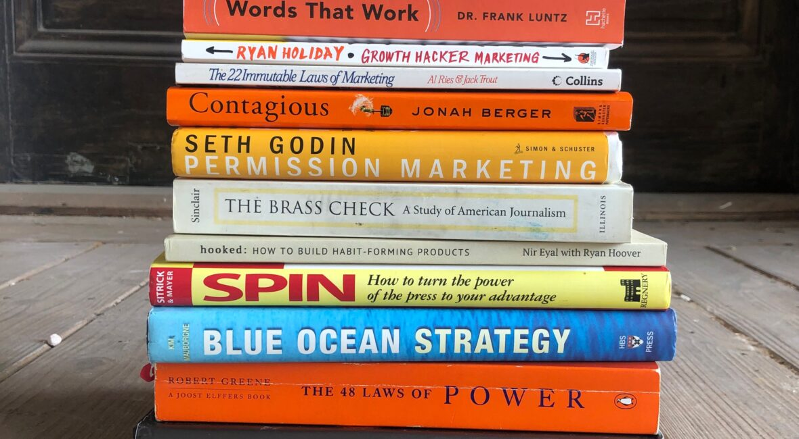

BLOG
Don’t Go To Business School. Read These 4 Books Instead
Warren Buffett considers the foundation of his multi-billion dollar empire to be a book. At 19 years old, he bought a copy of The Intelligent Investor by Benjamin Graham. We don’t know exactly what he paid for it, but in the early 1950s, a hardcover typically went for $1.30. Today, Buffett’s worth $108.7 billion, having given away some $37 billion to charitable causes.
Not a bad ROI!
One of the questions I get most is about business and marketing books specifically. In school, kids are already assigned literature and history. But about books that teach you about business? About money? About building something? About getting people interested in what you’ve built?
More than a few different book deals.
There are some amazing, life-changing books in these categories, some of which also rank among the best investments I’ve made in my life. I returned to many of them during the crazy twelve months of renovating and opening our new bookstore during the pandemic. And now, we carry many of the books below at The Painted Porch.
If you’re looking for a business education, these 4 books are a lot cheaper than an MBA
1. The Fish That Ate the Whale: The Life and Times of America’s Banana King by Rich Cohen
This book tells the incredible story of Sam Zemurray, the penniless Russian immigrant who, through pure hustle and drive, became the CEO of United Fruit, the biggest fruit company in the world. The greatness of Zemurray, as author Rich Cohen puts it, “lies in the fact that he never lost faith in his ability to salvage a situation.” For Zemurray, there was always a countermove, always a way through an obstacle, no matter how dire the situation. That’s why, although he was a morally complicated man, I used his story in The Obstacle is the Way. You can listen to my interview with Rich Cohen here as well.
2. Shoe Dog: A Memoir by the Creator of Nike
This is the memoir of the founder of Nike, it’s really the story of a lost kid trying to find meaning in his life and it ends with him creating a multi-billion dollar company that changes sports forever. What I love about this book is that 90% of it is about the early years. It’s not about how to sign Jordan, but about how he sold shoes out of the trunk of his car. The main thing I took from it? You actually have to love the thing you’re going into business to sell. Live and love it and breathe it.
3. Essentialism: The Disciplined Pursuit of Less by Greg McKeown
This is a book that focuses you, that makes you question many of the projects and commitments and assumptions you’ve said yes to over the years. Though the book is about applying design-style thinking to your life, I really think it is just a solid book of philosophy, stories and anecdotes that make you reconsider your priorities. That’s all you can hope for from a book and it more than delivers, as Greg did when he came on the Daily Stoic podcast.
4. Good to Great: Why Some Companies Make the Leap and Others Don’t by Jim Collins
There is a little pseudo-science to Collins’ research but I don’t care about that. This is a great book. He creates a framework for how to think about building a great company. You get the right people on the bus, you spend time and energy winding up the flywheel and if you’re lucky you break through. It’s not a complicated formula but the examples in this book are helpful. Even if you don’t read it, the title is helpful. You don’t want to be good, you want to be great.
BLOG
Everything You Say Yes To Is Saying No To Something Else
It is with some pride that I can think of some “big” things I have passed on doing.
Tickets to the Super Bowl.
A trip to Necker Island.
More than a few different book deals.
I’m not proud because I think I am better than those things, it was just that I had better things to do with that time, at that time. Sometimes it was family, sometimes it was cooler work opportunities, sometimes it was just because I was exhausted and I needed to rest.
Just because you’re offered something that might be good for your career, that would definitely feel good to your ego, that most people would have said yes to, doesn’t mean you have to listen to your ego and accept the offer. You can say NO.
It’s easy to forget that, especially with peer pressure and FOMO, but it’s true.
There’s a great quote from Nassim Taleb:
You are rich if and only if money
you refuse tastes better than money you accept.
I didn’t need it. I had competing interests. I could say “No,” so I did. That’s a rich feeling, that’s only tangentially related to money.